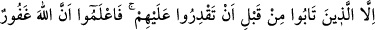
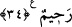

olduğu için meselâ malı gasbetmeksizin öldürme, malı gasbederek öldürme,
öldürmeksizin malını alma veya öldürme amacı gütmeksizin sırf korkutma ve malını
alma gibi şekillerde olabilir. İşte bu farklı şekiller için çeşitli cezâlar konulmuştur.
“Ya öldürülmeleri”, yani eğer sâdece öldürme suçunu gerçekleştirmişlerse had gereği
olarak asmaksızın öldürülmeleridir. Yok eğer vârisleri affederse bu affa îtibar edilmez.
Çünkü bu cezâ şerîatın hakkıdır. Öldürme işinin yaralayıcı bir âletle olup olmaması
arasında bir fark yoktur.
“ya asılmaları”, yani eğer yol kesenler, hem adam öldürmüşler hem de mal
almışlarsa, bu sefer cezâları ölümle birlikte asılmalarıdır. Şöyle ki, suçlular diri olarak
asılırlar. Çünkü birini diri olarak asmak, başkasının da aynı suçu işlememesi yönünde
çok daha tesirli bir caydırıcı unsurdur.
“yâhut el ve ayaklarının çaprazlama kesilmesi”, yani sağ elinin bilekten, sol
ayağının aşık kemiğinden kesilmesidir ki bunun icrâ edilmesi için soyguncuların bir
müslümanın veya zimmînin öldürmeksizin sâdece malını yol kesme sûretiyle almaları
gerekir. Ayrıca bu maldan, her birine on dirhem veya buna eşit kıymette bir miktar
düşmelidir. Onların ellerinin kesilmesinin sebebi malı almaları, ayaklarının kesilmesi
de yolun geçiş güvenliğinde tedirginlik meydana getirmeleridir.
“yâhut da” korkutma ve bozgunculuk yapmaya çalışmak dışında birşey
yapmamışlarsa “bulundukları yerden sürülmeleridir.” Bize göre buradaki sürgünden
maksat, hapistir. Çünkü hapis, bir suç işleyenin şerrini halktan uzaklaştırmak olduğu için
bir çeşit sürgündür. Uzaklaştırmak için dışarıda dolaşmasını mendir. Yine yol kesenler
insanları korkuttukları ve emniyeti ortadan kaldırdıkları için de ta’zir olunurlar.
“Bu, onların dünyâdaki rüsvaylığıdır.” Kepâzelik ve aşağılanmalarıdır. Bundan
başka “onlar için âhirette de büyük azap vardır.” Onların yaptıkları oranında keyfiyeti
bilinemeyecek bir azap vardır.
34- Ancak, siz kendilerini yenip ele geçirmeden önce tevbe edenler müstesna;
biliniz ki Allah çok bağışlayıcı ve esirgeyicidir.
Buradaki istisna, âyetin son tarafından da anlaşıldığı gibi hukûkullah ile ilgili bir
istisnadır. Kul hakları ise tevbe ile sâkıt olmaz. Eğer yol kesiciler bir insanı öldürüp de
ele geçmeden önce tevbe ederlerse bu tevbeleri sebebiyle had gereği olarak
katledilmeleri cezâsı düşer. Ölenin yakını, ister kısas yoluyla hakkını alır, isterse
affeder. Eğer yol kesiciler oradakilerin mallarını alır ve yakalanmadan evvel tevbe
ederlerse bu tevbeleri sebebiyle elleri ve ayaklarının çapraz olarak kesilmesinin
vâcibliği düşer. Mal sâhibinin hakkı bâkî kalır ve hırsızların malları iade etmeleri